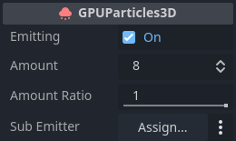
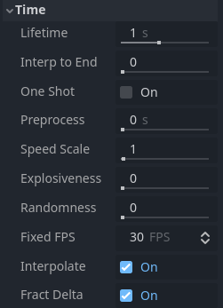
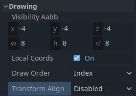

Các thuộc tính của hệ thống hạt 3D
Các thuộc tính của emitter

Ô đánh dấu bên cạnh thuộc tính Emitting kích hoạt và vô hiệu hóa hệ thống hạt. Hạt chỉ được xử lý và kết xuất nếu ô này được đánh dấu. Bạn có thể đặt thuộc tính này khi chạy nếu muốn kích hoạt hoặc vô hiệu hóa hệ thống hạt một cách động.
Thuộc tính Amount điều khiển số lượng hạt tối đa hiển thị tại bất kỳ thời điểm nào. Tăng giá trị để sinh nhiều hạt hơn, đổi lại tốn hiệu năng hơn.
Thuộc tính Amount Ratio là tỷ lệ số hạt so với số lượng sẽ được phát ra. Nếu nó nhỏ hơn 1.0, số hạt được phát ra trong suốt thời gian sống sẽ là Amount * Amount Ratio. Thay đổi giá trị này trong khi đang phát không ảnh hưởng đến các hạt đã được tạo và không khiến hệ thống hạt khởi động lại. Nó hữu ích để tạo các hiệu ứng mà số hạt được phát ra thay đổi theo thời gian.
Bạn có thể đặt một node hạt khác làm Sub Emitter, node này sẽ được sinh ra như con của mỗi hạt. Xem mục Sub-emitter trong tài liệu này để biết giải thích chi tiết về cách thêm sub-emitter vào hệ thống hạt.
Các thuộc tính thời gian

Thuộc tính Lifetime điều khiển thời gian mỗi hạt tồn tại trước khi biến mất. Nó được đo bằng giây. Rất nhiều thuộc tính của hạt có thể được đặt để thay đổi trong suốt thời gian sống của hạt và chuyển mượt từ giá trị này sang giá trị khác.
Lifetime và Amount có liên quan với nhau. Chúng quyết định tốc độ phát của hệ thống hạt. Bất cứ khi nào muốn biết có bao nhiêu hạt được sinh ra mỗi giây, bạn sẽ dùng công thức sau:
Ví dụ: phát 32 hạt, mỗi hạt có thời gian sống 4 giây, nghĩa là hệ thống phát 8 hạt mỗi giây.
Thuộc tính Interp to End khiến mọi hạt trong node nội suy về phía cuối thời gian sống của chúng.
Nếu ô đánh dấu bên cạnh thuộc tính One Shot được chọn, hệ thống hạt sẽ phát amount hạt rồi tự vô hiệu hóa. Nó chỉ "chạy" một lần. Thuộc tính này mặc định không được chọn, vì vậy hệ thống sẽ tiếp tục phát hạt cho đến khi bị vô hiệu hóa hoặc bị hủy thủ công. Hạt one-shot rất phù hợp với các hiệu ứng phản ứng với một sự kiện duy nhất, như nhặt vật phẩm hoặc mảnh vụn văng ra khi viên đạn trúng tường.
Thuộc tính Preprocess là cách tua nhanh đến một thời điểm giữa vòng đời của hệ thống hạt và bắt đầu kết xuất từ đó. Nó được đo bằng giây. Giá trị 1 nghĩa là khi hệ thống hạt bắt đầu, nó sẽ trông như đã chạy được một giây rồi.
Điều này có thể hữu ích nếu bạn muốn hệ thống hạt trông như đã hoạt động một lúc dù nó vừa mới được tải vào scene. Hãy xem ví dụ dưới đây. Cả hai hệ thống hạt đều mô phỏng bụi bay quanh khu vực. Với giá trị preprocess là 0, sẽ không có bụi trong vài giây đầu vì hệ thống chưa phát đủ hạt để hiệu ứng trở nên rõ ràng. Điều này có thể thấy trong video bên trái. Hãy so sánh với video bên phải, nơi hệ thống hạt được preprocess trong 4 giây. Bụi hiển thị đầy đủ ngay từ đầu vì chúng ta đã bỏ qua bốn giây "thiết lập" đầu tiên.

Không preprocess (trái) và preprocess 4 giây (phải)
Bạn có thể làm chậm hoặc tăng tốc hệ thống hạt bằng thuộc tính Speed Scale. Điều này áp dụng cho cả việc xử lý dữ liệu lẫn kết xuất hạt. Đặt thành 0 để tạm dừng hoàn toàn hệ thống hạt hoặc đặt thành giá trị như 2 để nó chạy nhanh gấp đôi.

Các giá trị speed scale khác nhau: 0.1 (trái), 0.5 (giữa), 1.0 (phải)
Thuộc tính Explosiveness điều khiển việc hạt được phát ra tuần tự hay đồng thời. Giá trị 0 nghĩa là hạt được phát ra lần lượt từng hạt một. Giá trị 1 nghĩa là toàn bộ amount hạt được phát ra cùng lúc, mang lại cho hiệu ứng vẻ "bùng nổ" hơn.
Thuộc tính Randomness thêm một chút ngẫu nhiên vào thời điểm phát hạt. Khi đặt thành 0, hoàn toàn không có ngẫu nhiên và khoảng cách giữa lần phát một hạt và hạt tiếp theo luôn như nhau: các hạt được phát ra theo các khoảng đều đặn. Giá trị Randomness là 1 khiến khoảng cách hoàn toàn ngẫu nhiên. Bạn có thể dùng thuộc tính này để phá bớt sự đồng đều trong hiệu ứng. Khi Explosiveness được đặt thành 1, thuộc tính này không có tác dụng.

Tắt nội suy (trái) và bật nội suy (phải)
Thuộc tính Fixed FPS giới hạn tần suất hệ thống hạt được xử lý. Điều này bao gồm cập nhật thuộc tính cũng như va chạm và attractor. Việc này có thể cải thiện hiệu năng đáng kể, đặc biệt trong các scene dùng nhiều va chạm hạt. Lưu ý rằng điều này không thay đổi tốc độ di chuyển hoặc xoay của hạt. Bạn sẽ dùng thuộc tính Speed Scale cho việc đó.
Khi bạn đặt Fixed FPS ở giá trị rất thấp, bạn sẽ nhận thấy hoạt ảnh hạt bắt đầu trông giật cục. Đôi khi điều này lại được mong muốn nếu nó phù hợp với phong cách nghệ thuật, nhưng phần lớn thời gian bạn sẽ muốn hệ thống hạt chuyển động mượt mà. Đó chính là công dụng của thuộc tính Interpolate. Nó pha trộn các thuộc tính của hạt giữa các lần cập nhật, nhờ đó ngay cả một hệ thống hạt chạy ở 10 FPS cũng trông mượt như khi chạy ở 60.
Ghi chú
Khi dùng va chạm hạt, hiện tượng xuyên vật thể (tunneling) có thể xảy ra nếu hạt di chuyển nhanh và collider mỏng. Bạn có thể khắc phục bằng cách tăng Fixed FPS (đổi lại sẽ tốn hiệu năng).
Các thuộc tính va chạm
Xem thêm
Để thiết lập va chạm hạt, bạn cần làm thêm các bước được mô tả trong Va chạm hạt 3D.
Thuộc tính Base Size xác định kích thước va chạm mặc định của mỗi hạt, được dùng để kiểm tra xem hạt có đang va chạm với môi trường hay không. Thông thường bạn sẽ muốn giá trị này xấp xỉ bằng kích thước của hạt. Với những hạt rất nhỏ và di chuyển rất nhanh, việc tăng giá trị này có thể hợp lý để ngăn chúng xuyên qua hình học va chạm.
Các thuộc tính vẽ

Thuộc tính Visibility AABB xác định một hộp bao quanh gốc tọa độ của hệ thống hạt. Chừng nào còn một phần bất kỳ của hộp này nằm trong trường nhìn của camera, hệ thống hạt vẫn hiển thị. Ngay khi hộp rời khỏi trường nhìn của camera, hệ thống hạt sẽ hoàn toàn không được kết xuất nữa. Bạn có thể dùng thuộc tính này để tăng hiệu năng bằng cách giữ hộp nhỏ nhất có thể.
Một điều cần lưu ý khi đặt kích thước cho Visibility AABB là các hạt nằm ngoài giới hạn của nó sẽ biến mất ngay lập tức khi hộp rời khỏi trường nhìn của camera. Va chạm hạt cũng sẽ không xảy ra bên ngoài Visibility AABB. Dù về mặt kỹ thuật đây không phải là lỗi, điều này có thể ảnh hưởng tiêu cực đến trải nghiệm hình ảnh.
Khi thuộc tính Local Coords được bật, mọi phép tính của hạt sẽ dùng hệ tọa độ cục bộ để xác định những thứ như hướng lên/xuống, trọng lực và hướng chuyển động. Ví dụ, hướng lên và xuống sẽ theo phép xoay của hệ thống hạt hoặc của node cha của nó. Khi thuộc tính bị tắt, không gian thế giới toàn cục được dùng cho các phép tính này: hướng xuống luôn là -Y trong không gian thế giới, bất kể hệ thống hạt xoay thế nào.

Tọa độ không gian cục bộ (trái) so với tọa độ không gian thế giới (phải)
Thuộc tính Draw Order điều khiển thứ tự vẽ từng hạt. Index nghĩa là chúng được vẽ theo thứ tự phát ra: các hạt sinh ra sau được vẽ đè lên các hạt sinh ra trước. Lifetime nghĩa là chúng được vẽ theo thứ tự thời gian sống còn lại. Reverse Lifetime đảo ngược thứ tự vẽ của Lifetime. View Depth nghĩa là các hạt được vẽ theo khoảng cách tới camera: những hạt gần camera hơn được vẽ đè lên những hạt ở xa hơn.
Thuộc tính Transform Align điều khiển phép xoay mặc định của hạt. Disabled nghĩa là chúng không căn chỉnh theo cách nào cụ thể. Thay vào đó, phép xoay của chúng được xác định bởi các giá trị đặt trong process material. Z-Billboard nghĩa là các hạt sẽ luôn hướng về phía camera. Điều này tương tự thuộc tính Billboard trong Standard Material. Y to Velocity nghĩa là trục Y của mỗi hạt căn theo hướng chuyển động của nó. Điều này hữu ích cho những thứ như đạn hoặc mũi tên, khi bạn muốn hạt luôn chỉ "về phía trước". Z-Billboard + Y to Velocity kết hợp hai chế độ trên. Trục Z của mỗi hạt sẽ hướng về camera trong khi trục Y căn theo vận tốc của nó.
Các thuộc tính vệt (trail)

Các thuộc tính vệt hạt
Thuộc tính Enabled điều khiển việc hạt có được kết xuất dưới dạng vệt (trail) hay không. Bạn cần đánh dấu ô này nếu muốn dùng vệt hạt.
Thuộc tính Length Secs điều khiển thời lượng phát ra một vệt. Thời lượng càng dài thì vệt càng dài.
Xem phần Vệt hạt trong tài liệu này để biết giải thích chi tiết về cách vệt hạt hoạt động và cách thiết lập chúng.